Concept execution — 2D source into finished 3D, built to spec
Most of my work starts flat — a concept sheet, a set of elevations, sometimes just a paragraph of requirements. Getting it into three dimensions without losing anything on the way across is the job. A reference isn't inspiration, it's the spec, and what I hand back has to survive being held up next to it — usually quickly, because the image is what someone is waiting on to make a decision.
2D in, 3D out, matching the source. Proportion, silhouette, color, detail placement — checked against the original at every stage rather than eyeballed at the end.
A year of client work delivered to schedule, on top of a decade of collaborative and time-boxed projects. Every sheet lists its turnaround, because on executional work the schedule is part of the spec.
Feedback comes in, I diagnose what's actually being asked for, and revise. No attachment to a first pass that isn't landing.
Brand marks, palette, type and placement reproduced as specified — or integrated into the design when that's what the brief calls for.
My background is games and entertainment art, not defense architecture — I haven't built DoDAF products. Ten years of independent and collaborative games work, two credited Steam titles, and the past year delivering client work to spec. Format conventions I'll pick up from a template and a first round of redlines.
A full camera package for the show stand — exterior approaches, the graphic wall, and the interior meeting room — built from a multi-sheet elevation set to millimeter accuracy, then lit and staged so stakeholders could sign off on a build.
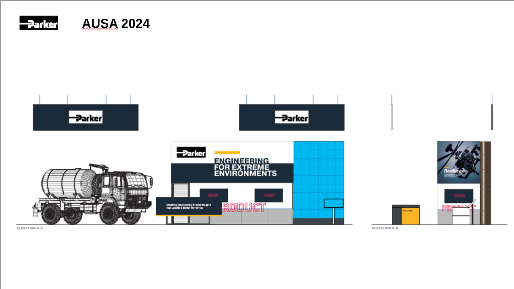
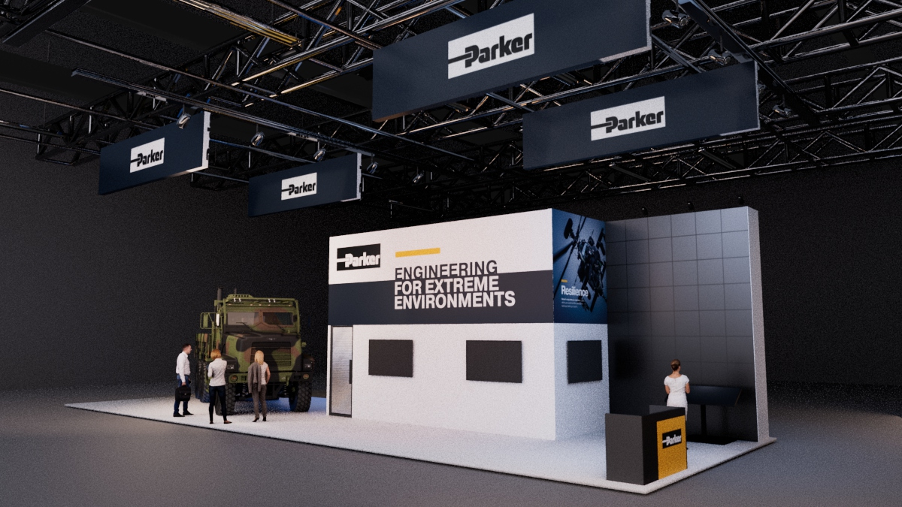
Elevations A-A and B-B, and the corner they resolve to.
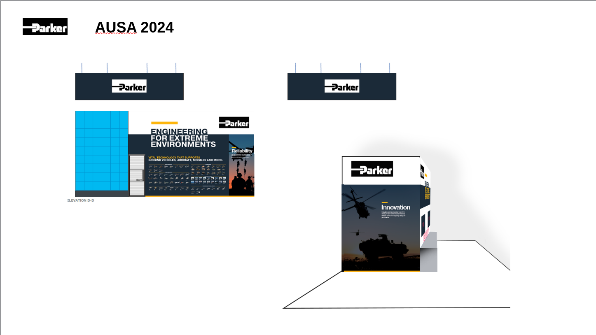
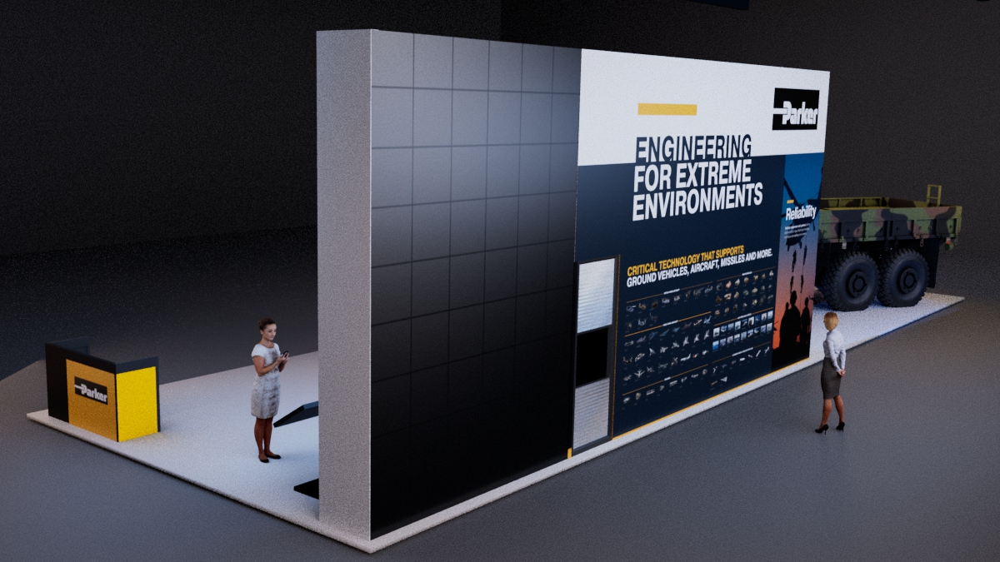
Elevation D-D against the wall as built — product grid, Reliability panel, yellow rule and header band all land where the drawing puts them.
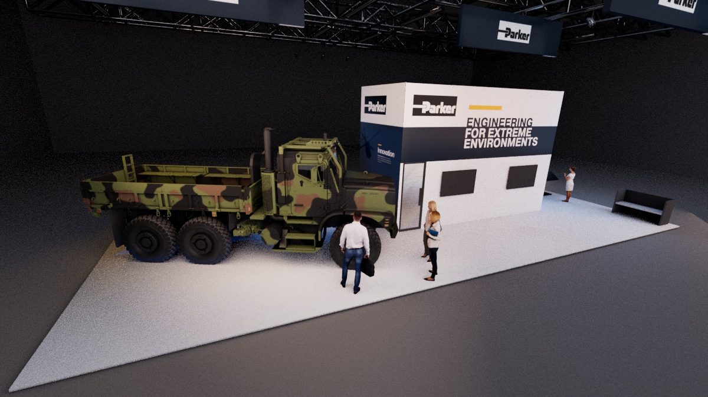
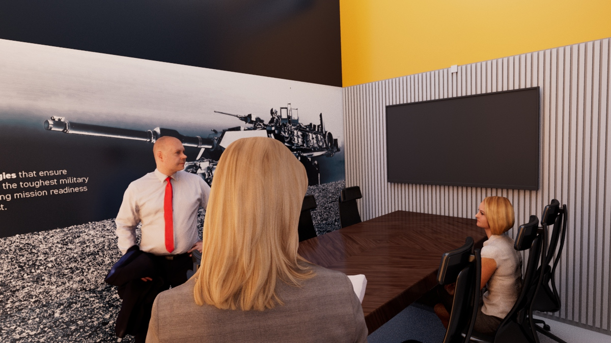
Two more from the delivered set: the opposite approach, and the enclosed meeting room interior.
Build notes
Scope delivered
First pass
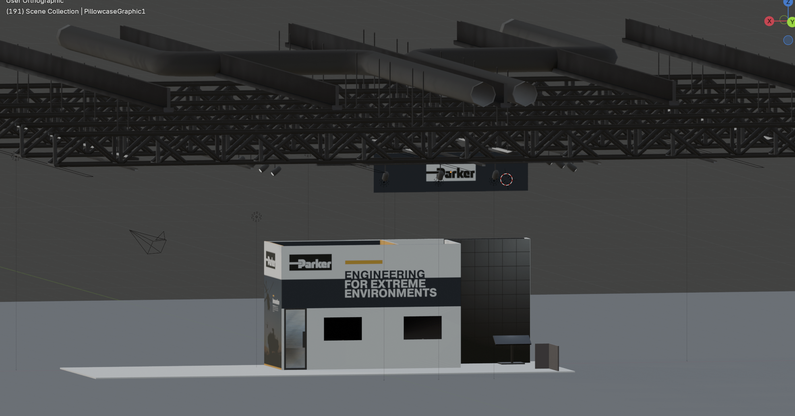
Layout shared as a working viewport grab — geometry and graphics placed, deliberately before any lighting spend. This is the pass the "more realistic" note came back on.
Front and back of the sculpt, shown either side of the concept art it was built from. One reference image in a single three-quarter pose — the whole back of the costume had to be reasoned out from it. Presented as a high-poly sculpt; this was a skills-development piece, not a game asset.
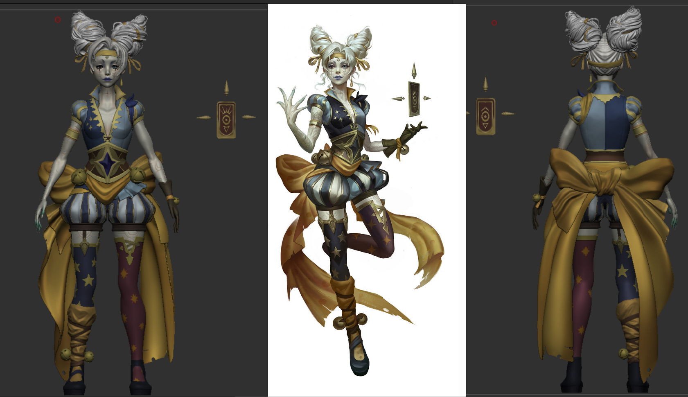
Left and right: final model. Center: source concept.
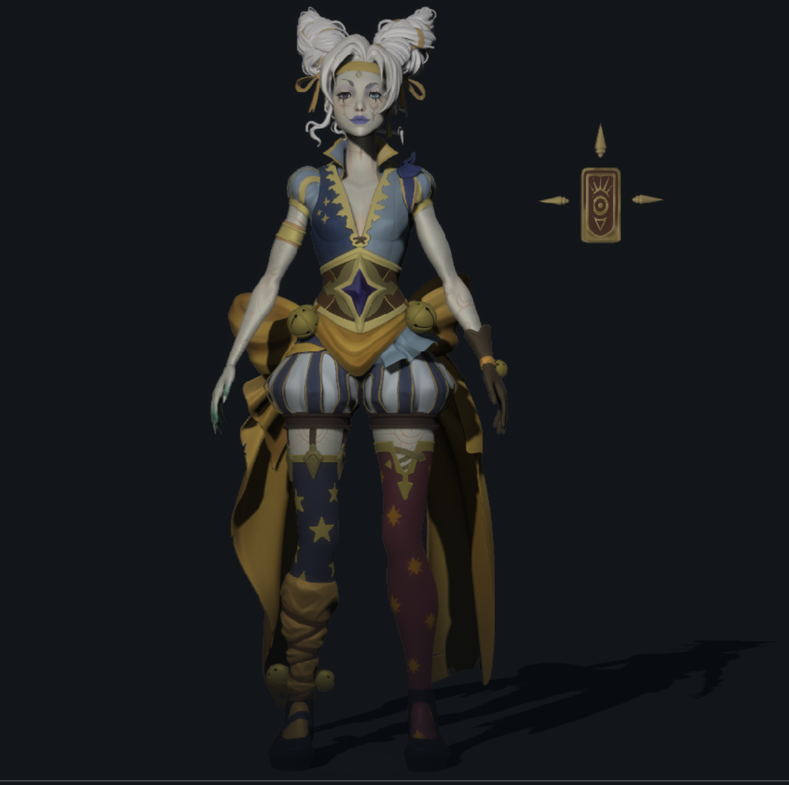
Front render with a fuller lighting pass.
Build notes
On the source
Concept by Marie Magny, used with permission. It's professional character design, which raises the bar on the match rather than lowering it — the asymmetries, the motif placement and the palette splits are all deliberate choices, so none of them could be quietly simplified to make the build easier.
Presented as a sculpt. Retopology and a game mesh weren't in scope for this piece.
Three written requirements, no reference art: read as mystical, derive from an animal, and incorporate the client's wheat-stalk mark. Designed and built against those. Shown at model stage with base materials.
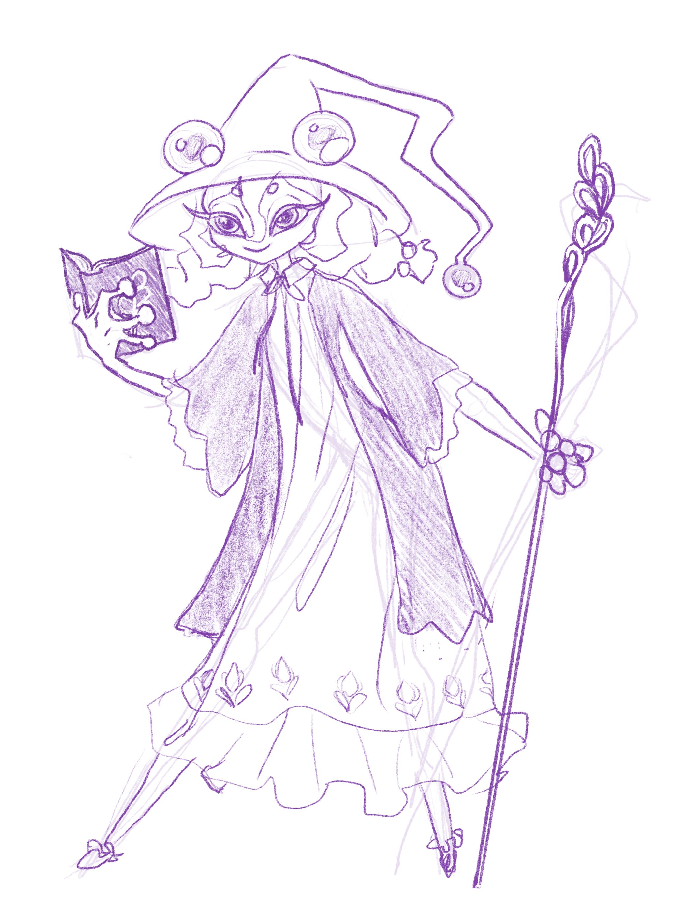
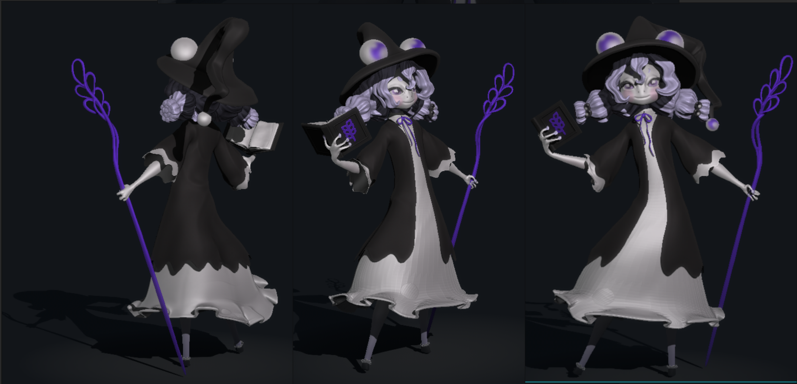
Left: my concept pass, developed from the written brief. Right: the model built from it.
Build notes
Why this one is here
The other sheets show fidelity to supplied artwork. This one shows the case where the brief is a sentence and the picture doesn't exist yet — and the result still has to satisfy every stated requirement.
Shown at model stage rather than final render — labeled so, deliberately.
Earlier personal work — a VRChat avatar taken start to finish solo, from pencil sketch to a fully surfaced character presented as a standard turnaround. Included because it's the piece that closes the loop from raw 2D all the way through to finished surface.
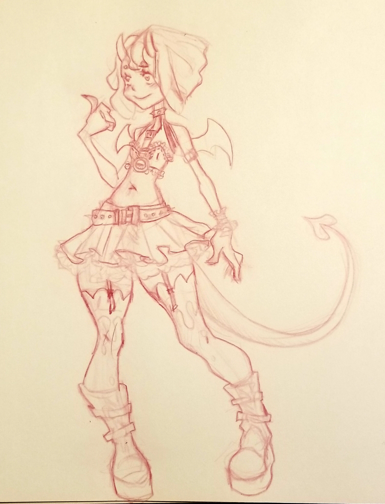
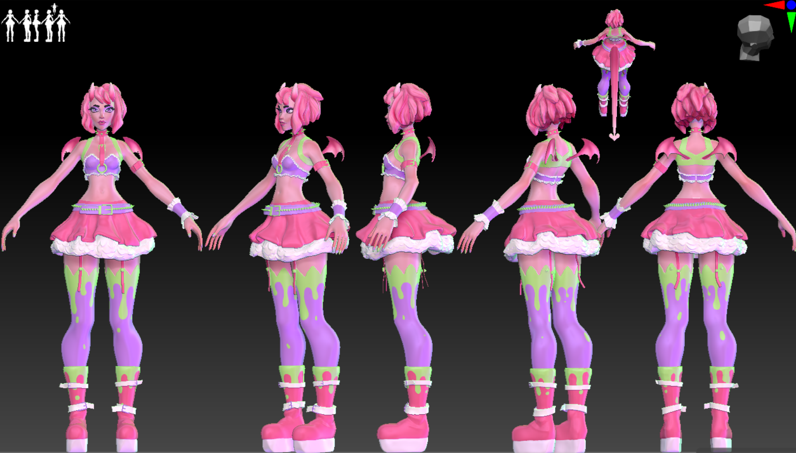
Left: original pencil concept. Right: finished turnaround, five views plus top.
Build notes
Note
Older than the other sheets and shown as a working viewport capture. Left as-is deliberately — it's what the review sheet looked like in production.
| Area | Tools | Depth |
|---|---|---|
| Sculpt | ZBrush | Primary — 10 yrs |
| Modeling | Maya, Blender | Primary — 10 yrs |
| Retopo & optimization | Game-ready topology, LODs, legacy asset audits | Production |
| Texture & look | Substance Painter, Photoshop, Illustrator, Nuke | Production |
| Render | Arnold — lighting, camera, staging | Client work |
| Realtime | Unreal 5, Unity, Godot | Production |
| Terrain & vegetation | SpeedTree, Maya — modeled to research specification | Proposal work |
| Pipeline & code | C# review and refactoring, OBJ / FBX interchange, dimensioned drawings | Client work |
Everything listed is something I've shipped work with, not something I've opened once.